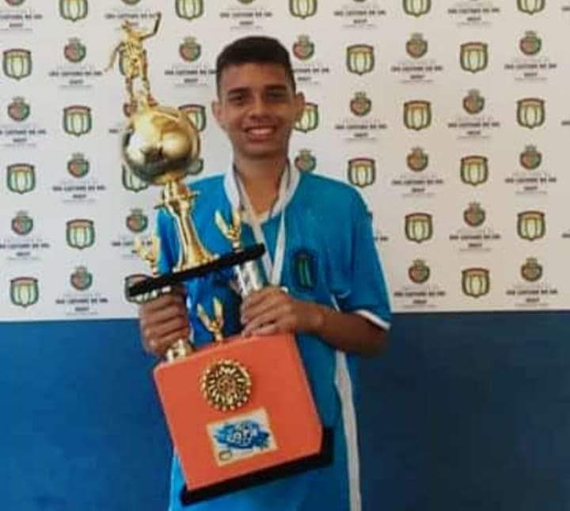

O futebol na minha vida


Comecei a jogar no Borussia Futebol de Base
em no final do ano de 2020, com meus 17
anos ainda sonhando em ser jogador de
futebol, aqui foi onde consegui evoluir
bastante meu futebol;
Joguei um campeonato importante na Barra
Funda onde na foto é eu momentos antes de
fazer o gol da classificação para a final.
Na final não tivemos sucesso acabamos perdendo
para o Corinthians FUT 7, esse é
importante porque foi o meu último campeonato e
meu último jogo que disputei ainda sonhando em
ser jogador.
Ingressei no São Caetano FC em 2017, com 14
anos, nesta idade eu já tinha passado por
outras escolinhas, mas nessa eu me destaquei
mais e achava que conseguiria conseguir
realizar meu sonho.
Aqui foi onde eu consegui conquistar meu
primeiro campeonato onde fui um dos melhores
jogadores do campeonato e fui observado por
alguns olheiros.
Me despedi do São Caetano em 2019 quando conheci
o Juarez, que me levou para o Guarulhos FC, ele
que cuidou de minha carreira, mas infelizmente foi
um das vítimas da pandemia.